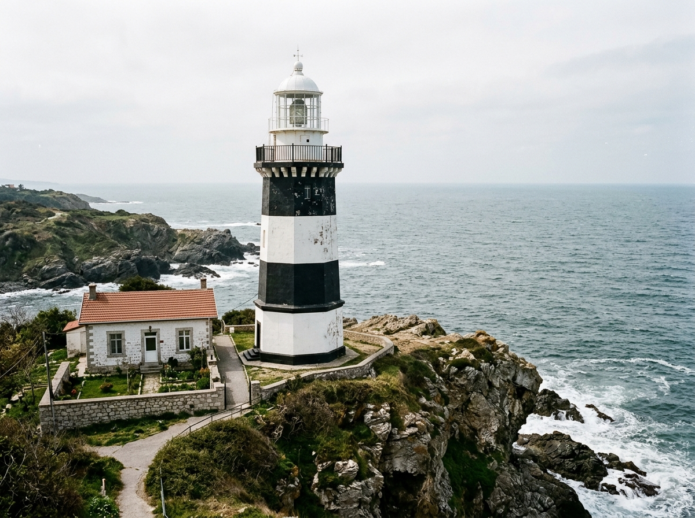

Karadeniz · İstanbul, Şile · 1859
Şile Feneri
Sekizgen taş gövdesi ve siyah-beyaz şeritleriyle Türkiye’nin en geniş gövdeli tarihi feneridir. Boğaz girişine yaklaşan gemilere 20 deniz mili öteden yol gösterir.
Kule: 19 m · Odak: 60 m · Fl W 15s